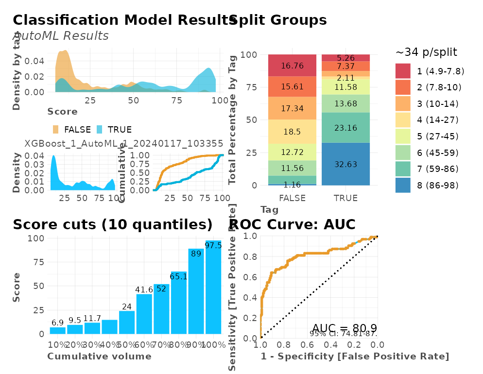
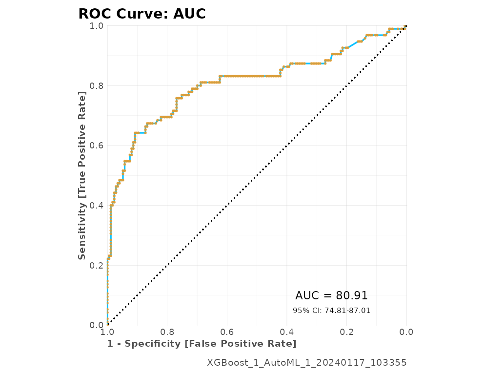
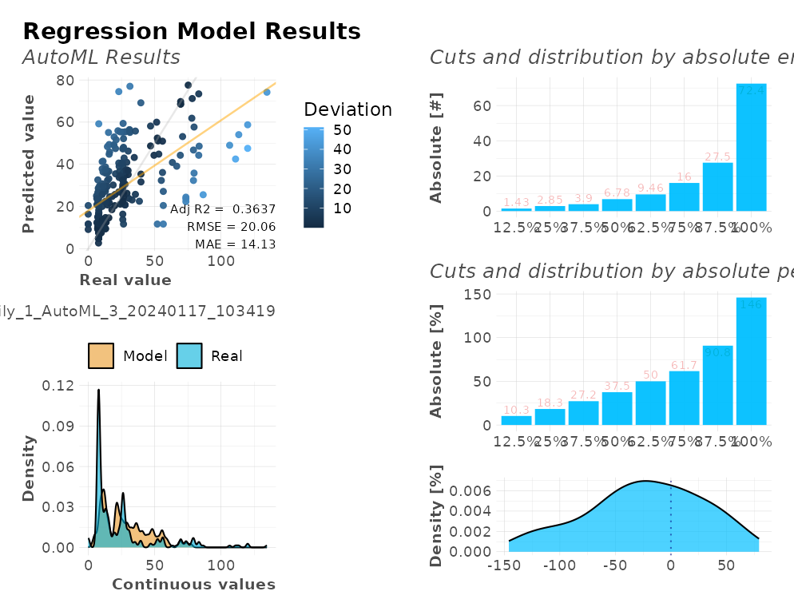

The lares package has multiple families of functions to help the analyst or data scientist achieve quality robust analysis without the need of much coding. One of the most complex but valuable functions we have is h2o_automl, which semi-automatically runs the whole pipeline of a Machine Learning model given a dataset and some customizable parameters. AutoML enables you to train high-quality models specific to your needs and accelerate the research and development process.
HELP: Before getting to the code, I recommend checking h2o_automl’s full documentation here or within your R session by running ?lares::h2o_automl. In it you’ll find a brief description of all the parameters you can set into the function to get exactly what you need and control how it behaves.
Pipeline
In short, these are some of the things that happen on its backend:

Mapping h2o_automl
Input a dataframe
dfand choose which one is the independent variable (y) you’d like to predict. You may set/change theseedargument to guarantee reproducibility of your results.The function decides if it’s a classification (categorical) or regression (continuous) model looking at the independent variable’s (
y) class and number of unique values, which can be control with thethreshparameter.The dataframe will be split in two: test and train datasets. The proportion of this split can be control with the
splitargument. This can be replicated with themsplit()function.You could also
centerandscaleyour numerical values before you continue, use theno_outliersto exclude some outliers, and/orimputemissing values withMICE. If it’s a classification model, the function can balance (under-sample) your training data. You can control this behavior with thebalanceargument. Until here, you can replicate the whole process with themodel_preprocess()function.Runs
h2o::h2o.automl(...)to train multiple models and generate a leaderboard with the top (max_modelsormax_time) models trained, sorted by their performance. You can also customize some additional arguments such asnfoldsfor k-fold cross-validations,exclude_algosandinclude_algosto exclude or include some algorithms, and any other additional argument you wish to pass to the mother function.The best model given the default performance metric (which can be changed with
stopping_metricparameter) evaluated with cross-validation (customize it withnfolds), will be selected to continue. You can also use the functionh2o_selectmodel()to select another model and recalculate/plot everything again using this alternate model.Performance metrics and plots will be calculated and rendered given the test predictions and test actual values (which were NOT passed to the models as inputs to be trained with). That way, your model’s performance metrics shouldn’t be biased. You can replicate these calculations with the
model_metrics()function.A list with all the inputs, leaderboard results, best selected model, performance metrics, and plots. You can either (play) see the results on console or export them using the
export_results()function.
Load the library
Now, let’s (install and) load the library, the data, and dig in:
# install.packages("lares")
library(lares)
# The data we'll use is the Titanic dataset
data(dft)
df <- subset(dft, select = -c(Ticket, PassengerId, Cabin))NOTE: I’ll randomly set some parameters on each example to give visibility on some of the arguments you can set to your models. Be sure to also check all the print, warnings, and messages shown throughout the process as they may have relevant information regarding your inputs and the backend operations.
Modeling examples
Let’s have a look at three specific examples: classification models (binary and multiple categories) and a regression model. Also, let’s see how we can export our models and put them to work on any environment.
Classification: Binary
Let’s begin with a binary (TRUE/FALSE) model to predict if each passenger Survived:
r <- h2o_automl(df, y = Survived, max_models = 1, impute = FALSE, target = "TRUE")
#> 2021-12-22 08:30:53 | Started process...
#> - INDEPENDENT VARIABLE: Survived
#> - MODEL TYPE: Classification
#>
[38;5;246m# A tibble: 2 × 5
[39m
#> tag n p order pcum
#>
[3m
[38;5;246m<lgl>
[39m
[23m
[3m
[38;5;246m<int>
[39m
[23m
[3m
[38;5;246m<dbl>
[39m
[23m
[3m
[38;5;246m<int>
[39m
[23m
[3m
[38;5;246m<dbl>
[39m
[23m
#>
[38;5;250m1
[39m FALSE 549 61.6 1 61.6
#>
[38;5;250m2
[39m TRUE 342 38.4 2 100
#> - MISSINGS: The following variables contain missing observations: Age (19.87%). Consider using the impute parameter.
#> - CATEGORICALS: There are 3 non-numerical features. Consider using ohse() or equivalent prior to encode categorical variables.
#> >>> Splitting data: train = 0.7 & test = 0.3
#> train_size test_size
#> 623 268
#> - REPEATED: There were 63 repeated rows which are being suppressed from the train dataset
#> - ALGORITHMS: excluded 'StackedEnsemble', 'DeepLearning'
#> - CACHE: Previous models are not being erased. You may use 'start_clean' [clear] or 'project_name' [join]
#> - UI: You may check results using H2O Flow's interactive platform: http://localhost:54321/flow/index.html
#> >>> Iterating until 1 models or 600 seconds...
#>
|
| | 0%
|
|======================================================================| 100%
#>
#> 08:30:54.251: Project: AutoML_5_20211222_83054
#> 08:30:54.251: Setting stopping tolerance adaptively based on the training frame: 0.0400641540107502
#> 08:30:54.251: Build control seed: 0
#> 08:30:54.251: training frame: Frame key: AutoML_5_20211222_83054_training_train_sid_ae0a_1 cols: 8 rows: 623 chunks: 1 size: 9400 checksum: -6748529001116748596
#> 08:30:54.251: validation frame: NULL
#> 08:30:54.251: leaderboard frame: NULL
#> 08:30:54.251: blending frame: NULL
#> 08:30:54.252: response column: tag
#> 08:30:54.252: fold column: null
#> 08:30:54.252: weights column: null
#> 08:30:54.252: Loading execution steps: [{XGBoost : [def_2 (1g, 10w), def_1 (2g, 10w), def_3 (3g, 10w), grid_1 (4g, 90w), lr_search (6g, 30w)]}, {GLM : [def_1 (1g, 10w)]}, {DRF : [def_1 (2g, 10w), XRT (3g, 10w)]}, {GBM : [def_5 (1g, 10w), def_2 (2g, 10w), def_3 (2g, 10w), def_4 (2g, 10w), def_1 (3g, 10w), grid_1 (4g, 60w), lr_annealing (6g, 10w)]}, {DeepLearning : [def_1 (3g, 10w), grid_1 (4g, 30w), grid_2 (5g, 30w), grid_3 (5g, 30w)]}, {completion : [resume_best_grids (10g, 60w)]}, {StackedEnsemble : [best_of_family_1 (1g, 5w), best_of_family_2 (2g, 5w), best_of_family_3 (3g, 5w), best_of_family_4 (4g, 5w), best_of_family_5 (5g, 5w), all_2 (2g, 10w), all_3 (3g, 10w), all_4 (4g, 10w), all_5 (5g, 10w), monotonic (6g, 10w), best_of_family_xgboost (6g, 10w), best_of_family_gbm (6g, 10w), all_xgboost (7g, 10w), all_gbm (7g, 10w), best_of_family_xglm (8g, 10w), all_xglm (8g, 10w), best_of_family (10g, 10w), best_N (10g, 10w)]}]
#> 08:30:54.253: Disabling Algo: StackedEnsemble as requested by the user.
#> 08:30:54.253: Disabling Algo: DeepLearning as requested by the user.
#> 08:30:54.253: Defined work allocations: [Work{def_2, XGBoost, ModelBuild, group=1, weight=10}, Work{def_1, GLM, ModelBuild, group=1, weight=10}, Work{def_5, GBM, ModelBuild, group=1, weight=10}, Work{def_1, XGBoost, ModelBuild, group=2, weight=10}, Work{def_1, DRF, ModelBuild, group=2, weight=10}, Work{def_2, GBM, ModelBuild, group=2, weight=10}, Work{def_3, GBM, ModelBuild, group=2, weight=10}, Work{def_4, GBM, ModelBuild, group=2, weight=10}, Work{def_3, XGBoost, ModelBuild, group=3, weight=10}, Work{XRT, DRF, ModelBuild, group=3, weight=10}, Work{def_1, GBM, ModelBuild, group=3, weight=10}, Work{grid_1, XGBoost, HyperparamSearch, group=4, weight=90}, Work{grid_1, GBM, HyperparamSearch, group=4, weight=60}, Work{lr_search, XGBoost, Selection, group=6, weight=30}, Work{lr_annealing, GBM, Selection, group=6, weight=10}, Work{resume_best_grids, virtual, Dynamic, group=10, weight=60}]
#> 08:30:54.253: Actual work allocations: [Work{def_2, XGBoost, ModelBuild, group=1, weight=10}, Work{def_1, GLM, ModelBuild, group=1, weight=10}, Work{def_5, GBM, ModelBuild, group=1, weight=10}, Work{def_1, XGBoost, ModelBuild, group=2, weight=10}, Work{def_1, DRF, ModelBuild, group=2, weight=10}, Work{def_2, GBM, ModelBuild, group=2, weight=10}, Work{def_3, GBM, ModelBuild, group=2, weight=10}, Work{def_4, GBM, ModelBuild, group=2, weight=10}, Work{def_3, XGBoost, ModelBuild, group=3, weight=10}, Work{XRT, DRF, ModelBuild, group=3, weight=10}, Work{def_1, GBM, ModelBuild, group=3, weight=10}, Work{grid_1, XGBoost, HyperparamSearch, group=4, weight=90}, Work{grid_1, GBM, HyperparamSearch, group=4, weight=60}, Work{lr_search, XGBoost, Selection, group=6, weight=30}, Work{lr_annealing, GBM, Selection, group=6, weight=10}, Work{resume_best_grids, virtual, Dynamic, group=10, weight=60}]
#> 08:30:54.253: AutoML job created: 2021.12.22 08:30:54.251
#> 08:30:54.264: AutoML build started: 2021.12.22 08:30:54.264
#> 08:30:54.264: Time assigned for XGBoost_1_AutoML_5_20211222_83054: 200.0s
#> 08:30:54.264: AutoML: starting XGBoost_1_AutoML_5_20211222_83054 model training
#> 08:30:54.286: XGBoost_1_AutoML_5_20211222_83054 [XGBoost def_2] started
#> 08:30:55.286: XGBoost_1_AutoML_5_20211222_83054 [XGBoost def_2] complete
#> 08:30:55.286: Adding model XGBoost_1_AutoML_5_20211222_83054 to leaderboard Leaderboard_AutoML_5_20211222_83054@@tag. Training time: model=0s, total=0s
#> 08:30:55.288: New leader: XGBoost_1_AutoML_5_20211222_83054, auc: 0.8580504786771105
#> 08:30:55.288: AutoML: hit the max_models limit; skipping GLM def_1
#> 08:30:55.288: AutoML: hit the max_models limit; skipping GBM def_5
#> 08:30:55.288: Skipping StackedEnsemble 'best_of_family_1' due to the exclude_algos option or it is already trained.
#> 08:30:55.288: AutoML: hit the max_models limit; skipping XGBoost def_1
#> 08:30:55.289: AutoML: hit the max_models limit; skipping DRF def_1
#> 08:30:55.289: AutoML: hit the max_models limit; skipping GBM def_2
#> 08:30:55.289: AutoML: hit the max_models limit; skipping GBM def_3
#> 08:30:55.289: AutoML: hit the max_models limit; skipping GBM def_4
#> 08:30:55.289: Skipping StackedEnsemble 'best_of_family_2' due to the exclude_algos option or it is already trained.
#> 08:30:55.289: Skipping StackedEnsemble 'all_2' due to the exclude_algos option or it is already trained.
#> 08:30:55.289: AutoML: hit the max_models limit; skipping XGBoost def_3
#> 08:30:55.289: AutoML: hit the max_models limit; skipping DRF XRT (Extremely Randomized Trees)
#> 08:30:55.289: AutoML: hit the max_models limit; skipping GBM def_1
#> 08:30:55.289: AutoML: hit the max_models limit; skipping DeepLearning def_1
#> 08:30:55.289: Skipping StackedEnsemble 'best_of_family_3' due to the exclude_algos option or it is already trained.
#> 08:30:55.289: Skipping StackedEnsemble 'all_3' due to the exclude_algos option or it is already trained.
#> 08:30:55.289: AutoML: hit the max_models limit; skipping XGBoost grid_1
#> 08:30:55.289: AutoML: hit the max_models limit; skipping GBM grid_1
#> 08:30:55.289: AutoML: hit the max_models limit; skipping DeepLearning grid_1
#> 08:30:55.289: Skipping StackedEnsemble 'best_of_family_4' due to the exclude_algos option or it is already trained.
#> 08:30:55.289: Skipping StackedEnsemble 'all_4' due to the exclude_algos option or it is already trained.
#> 08:30:55.289: AutoML: hit the max_models limit; skipping DeepLearning grid_2
#> 08:30:55.289: AutoML: hit the max_models limit; skipping DeepLearning grid_3
#> 08:30:55.290: Skipping StackedEnsemble 'best_of_family_5' due to the exclude_algos option or it is already trained.
#> 08:30:55.290: Skipping StackedEnsemble 'all_5' due to the exclude_algos option or it is already trained.
#> 08:30:55.290: AutoML: hit the max_models limit; skipping XGBoost lr_search
#> 08:30:55.290: AutoML: hit the max_models limit; skipping GBM lr_annealing
#> 08:30:55.290: Skipping StackedEnsemble 'monotonic' due to the exclude_algos option or it is already trained.
#> 08:30:55.290: Skipping StackedEnsemble 'best_of_family_xgboost' due to the exclude_algos option or it is already trained.
#> 08:30:55.290: Skipping StackedEnsemble 'best_of_family_gbm' due to the exclude_algos option or it is already trained.
#> 08:30:55.290: Skipping StackedEnsemble 'all_xgboost' due to the exclude_algos option or it is already trained.
#> 08:30:55.290: Skipping StackedEnsemble 'all_gbm' due to the exclude_algos option or it is already trained.
#> 08:30:55.291: Skipping StackedEnsemble 'best_of_family_xglm' due to the exclude_algos option or it is already trained.
#> 08:30:55.291: Skipping StackedEnsemble 'all_xglm' due to the exclude_algos option or it is already trained.
#> 08:30:55.291: AutoML: hit the max_models limit; skipping completion resume_best_grids
#> 08:30:55.291: Skipping StackedEnsemble 'best_of_family' due to the exclude_algos option or it is already trained.
#> 08:30:55.291: Skipping StackedEnsemble 'best_N' due to the exclude_algos option or it is already trained.
#> 08:30:55.291: Actual modeling steps: [{XGBoost : [def_2 (1g, 10w)]}]
#> 08:30:55.291: AutoML build stopped: 2021.12.22 08:30:55.291
#> 08:30:55.291: AutoML build done: built 1 models
#> 08:30:55.291: AutoML duration: 1.027 sec
#> 08:30:55.297: Verifying training frame immutability. . .
#> 08:30:55.297: Training frame was not mutated (as expected).
#> - EUREKA: Succesfully generated 1 models
#> model_id auc logloss aucpr
#> 1 XGBoost_1_AutoML_5_20211222_83054 0.8580505 0.4354417 0.8328423
#> mean_per_class_error rmse mse
#> 1 0.1970518 0.368945 0.1361204
#> SELECTED MODEL: XGBoost_1_AutoML_5_20211222_83054
#> - NOTE: The following variables were the least important: Parch, SibSp, Embarked.C, Pclass.2
#> >>> Running predictions for Survived...
#>
|
| | 0%
|
|======================================================================| 100%
#>
|
| | 0%
|
|======================================================================| 100%
#> Target value: TRUE
#> >>> Generating plots...
#> Model (1/1): XGBoost_1_AutoML_5_20211222_83054
#> Independent Variable: Survived
#> Type: Classification (2 classes)
#> Algorithm: XGBOOST
#> Split: 70% training data (of 891 observations)
#> Seed: 0
#>
#> Test metrics:
#> AUC = 0.8323
#> ACC = 0.18657
#> PRC = 0.20408
#> TPR = 0.39216
#> TNR = 0.060241
#>
#> Most important variables:
#> Sex.female (45.6%)
#> Pclass.3 (14.5%)
#> Fare (12.4%)
#> Age (11.7%)
#> Sex.male (6.7%)
#> Process duration: 9.76sLet’s take a look at the plots generated into a single dashboard:
plot(r)
We also have several calculations for our model’s performance that may come useful such as a confusion matrix, gain and lift by percentile, area under the curve (AUC), accuracy (ACC), recall or true positive rate (TPR), cross-validation metrics, exact thresholds to maximize each metric, and others:
r$metrics
#> $dictionary
#> [1] "AUC: Area Under the Curve"
#> [2] "ACC: Accuracy"
#> [3] "PRC: Precision = Positive Predictive Value"
#> [4] "TPR: Sensitivity = Recall = Hit rate = True Positive Rate"
#> [5] "TNR: Specificity = Selectivity = True Negative Rate"
#> [6] "Logloss (Error): Logarithmic loss [Neutral classification: 0.69315]"
#> [7] "Gain: When best n deciles selected, what % of the real target observations are picked?"
#> [8] "Lift: When best n deciles selected, how much better than random is?"
#>
#> $confusion_matrix
#> Pred
#> Real FALSE TRUE
#> FALSE 10 156
#> TRUE 62 40
#>
#> $gain_lift
#> # A tibble: 10 × 10
#> percentile value random target total gain optimal lift response score
#> <fct> <chr> <dbl> <int> <int> <dbl> <dbl> <dbl> <dbl> <dbl>
#> 1 1 TRUE 10.1 26 27 25.5 26.5 153. 25.5 89.9
#> 2 2 TRUE 20.5 25 28 50 53.9 144. 24.5 62.3
#> 3 3 TRUE 30.6 15 27 64.7 80.4 111. 14.7 45.5
#> 4 4 TRUE 39.9 6 25 70.6 100 76.8 5.88 33.0
#> 5 5 TRUE 50 9 27 79.4 100 58.8 8.82 26.0
#> 6 6 TRUE 60.1 7 27 86.3 100 43.6 6.86 16.8
#> 7 7 TRUE 69.8 2 26 88.2 100 26.5 1.96 11.8
#> 8 8 TRUE 80.6 6 29 94.1 100 16.8 5.88 9.06
#> 9 9 TRUE 89.9 3 25 97.1 100 7.93 2.94 7.52
#> 10 10 TRUE 100 3 27 100 100 0 2.94 3.49
#>
#> $metrics
#> AUC ACC PRC TPR TNR
#> 1 0.8323 0.18657 0.20408 0.39216 0.060241
#>
#> $cv_metrics
#> # A tibble: 20 × 8
#> metric mean sd cv_1_valid cv_2_valid cv_3_valid cv_4_valid cv_5_valid
#> <chr> <dbl> <dbl> <dbl> <dbl> <dbl> <dbl> <dbl>
#> 1 accuracy 0.822 0.0418 0.88 0.84 0.824 0.790 0.774
#> 2 auc 0.867 0.0457 0.946 0.861 0.838 0.855 0.833
#> 3 err 0.178 0.0418 0.12 0.16 0.176 0.210 0.226
#> 4 err_cou… 22.2 5.12 15 20 22 26 28
#> 5 f0point5 0.768 0.0466 0.809 0.806 0.792 0.714 0.721
#> 6 f1 0.776 0.0335 0.835 0.773 0.761 0.755 0.759
#> 7 f2 0.788 0.0529 0.864 0.742 0.732 0.8 0.8
#> 8 lift_to… 2.61 0.205 2.91 2.66 2.55 2.58 2.34
#> 9 logloss 0.436 0.0665 0.328 0.420 0.471 0.462 0.497
#> 10 max_per… 0.238 0.0673 0.122 0.277 0.286 0.237 0.268
#> 11 mcc 0.633 0.0728 0.744 0.654 0.626 0.582 0.557
#> 12 mean_pe… 0.816 0.0383 0.881 0.817 0.805 0.798 0.781
#> 13 mean_pe… 0.184 0.0383 0.119 0.183 0.195 0.202 0.219
#> 14 mse 0.136 0.0246 0.0968 0.129 0.147 0.149 0.159
#> 15 pr_auc 0.842 0.0412 0.913 0.834 0.809 0.818 0.836
#> 16 precisi… 0.765 0.0659 0.792 0.829 0.814 0.690 0.698
#> 17 r2 0.425 0.0899 0.571 0.451 0.383 0.371 0.350
#> 18 recall 0.797 0.0745 0.884 0.723 0.714 0.833 0.830
#> 19 rmse 0.368 0.0348 0.311 0.359 0.383 0.386 0.399
#> 20 specifi… 0.836 0.0818 0.878 0.910 0.895 0.763 0.732
#>
#> $max_metrics
#> metric threshold value idx
#> 1 max f1 0.46894562 0.7574468 173
#> 2 max f2 0.24541338 0.8112324 244
#> 3 max f0point5 0.69501430 0.8052885 112
#> 4 max accuracy 0.46894562 0.8170144 173
#> 5 max precision 0.96080315 1.0000000 0
#> 6 max recall 0.03826427 1.0000000 396
#> 7 max specificity 0.96080315 1.0000000 0
#> 8 max absolute_mcc 0.46894562 0.6110028 173
#> 9 max min_per_class_accuracy 0.34979387 0.7875000 206
#> 10 max mean_per_class_accuracy 0.46894562 0.8029482 173
#> 11 max tns 0.96080315 383.0000000 0
#> 12 max fns 0.96080315 239.0000000 0
#> 13 max fps 0.02521262 383.0000000 399
#> 14 max tps 0.03826427 240.0000000 396
#> 15 max tnr 0.96080315 1.0000000 0
#> 16 max fnr 0.96080315 0.9958333 0
#> 17 max fpr 0.02521262 1.0000000 399
#> 18 max tpr 0.03826427 1.0000000 396The same goes for the plots generated for these metrics. We have the gains and response plots on test data-set, confusion matrix, and ROC curves.
r$plots$metrics
#> $gains
#>
#> $response
#>
#> $conf_matrix
#>
#> $ROC
For all models, regardless of their type (classification or regression), you can check the importance of each variable as well:
head(r$importance)
#> variable relative_importance scaled_importance importance
#> 1 Sex.female 241.84279 1.00000000 0.45613572
#> 2 Pclass.3 76.90151 0.31798141 0.14504268
#> 3 Fare 65.71823 0.27173947 0.12395008
#> 4 Age 62.12172 0.25686821 0.11716676
#> 5 Sex.male 35.27571 0.14586214 0.06653293
#> 6 Pclass.1 16.80339 0.06948062 0.03169259
r$plots$importance
Classification: Multi-Categorical
Now, let’s run a multi-categorical (+2 labels) model to predict Pclass of each passenger:
r <- h2o_automl(df, Pclass, ignore = c("Fare", "Cabin"), max_time = 30, plots = FALSE)
#> 2021-12-22 08:31:09 | Started process...
#> - INDEPENDENT VARIABLE: Pclass
#> - MODEL TYPE: Classification
#>
[38;5;246m# A tibble: 3 × 5
[39m
#> tag n p order pcum
#>
[3m
[38;5;246m<fct>
[39m
[23m
[3m
[38;5;246m<int>
[39m
[23m
[3m
[38;5;246m<dbl>
[39m
[23m
[3m
[38;5;246m<int>
[39m
[23m
[3m
[38;5;246m<dbl>
[39m
[23m
#>
[38;5;250m1
[39m n_3 491 55.1 1 55.1
#>
[38;5;250m2
[39m n_1 216 24.2 2 79.4
#>
[38;5;250m3
[39m n_2 184 20.6 3 100
#> - MISSINGS: The following variables contain missing observations: Age (19.87%). Consider using the impute parameter.
#> - CATEGORICALS: There are 3 non-numerical features. Consider using ohse() or equivalent prior to encode categorical variables.
#> >>> Splitting data: train = 0.7 & test = 0.3
#> train_size test_size
#> 623 268
#> - REPEATED: There were 65 repeated rows which are being suppressed from the train dataset
#> - ALGORITHMS: excluded 'StackedEnsemble', 'DeepLearning'
#> - CACHE: Previous models are not being erased. You may use 'start_clean' [clear] or 'project_name' [join]
#> - UI: You may check results using H2O Flow's interactive platform: http://localhost:54321/flow/index.html
#> >>> Iterating until 3 models or 30 seconds...
#>
#> 08:31:09.749: Project: AutoML_6_20211222_83109
#> 08:31:09.750: Setting stopping tolerance adaptively based on the training frame: 0.0400641540107502
#> 08:31:09.750: Build control seed: 0
#> 08:31:09.750: training frame: Frame key: AutoML_6_20211222_83109_training_train_sid_88a8_82 cols: 8 rows: 623 chunks: 1 size: 9412 checksum: -6266075352297987636
#> 08:31:09.750: validation frame: NULL
#> 08:31:09.750: leaderboard frame: NULL
#> 08:31:09.750: blending frame: NULL
#> 08:31:09.750: response column: tag
#> 08:31:09.750: fold column: null
#> 08:31:09.750: weights column: null
#> 08:31:09.751: Loading execution steps: [{XGBoost : [def_2 (1g, 10w), def_1 (2g, 10w), def_3 (3g, 10w), grid_1 (4g, 90w), lr_search (6g, 30w)]}, {GLM : [def_1 (1g, 10w)]}, {DRF : [def_1 (2g, 10w), XRT (3g, 10w)]}, {GBM : [def_5 (1g, 10w), def_2 (2g, 10w), def_3 (2g, 10w), def_4 (2g, 10w), def_1 (3g, 10w), grid_1 (4g, 60w), lr_annealing (6g, 10w)]}, {DeepLearning : [def_1 (3g, 10w), grid_1 (4g, 30w), grid_2 (5g, 30w), grid_3 (5g, 30w)]}, {completion : [resume_best_grids (10g, 60w)]}, {StackedEnsemble : [best_of_family_1 (1g, 5w), best_of_family_2 (2g, 5w), best_of_family_3 (3g, 5w), best_of_family_4 (4g, 5w), best_of_family_5 (5g, 5w), all_2 (2g, 10w), all_3 (3g, 10w), all_4 (4g, 10w), all_5 (5g, 10w), monotonic (6g, 10w), best_of_family_xgboost (6g, 10w), best_of_family_gbm (6g, 10w), all_xgboost (7g, 10w), all_gbm (7g, 10w), best_of_family_xglm (8g, 10w), all_xglm (8g, 10w), best_of_family (10g, 10w), best_N (10g, 10w)]}]
#> 08:31:09.751: Disabling Algo: StackedEnsemble as requested by the user.
#> 08:31:09.752: Disabling Algo: DeepLearning as requested by the user.
#> 08:31:09.752: Defined work allocations: [Work{def_2, XGBoost, ModelBuild, group=1, weight=10}, Work{def_1, GLM, ModelBuild, group=1, weight=10}, Work{def_5, GBM, ModelBuild, group=1, weight=10}, Work{def_1, XGBoost, ModelBuild, group=2, weight=10}, Work{def_1, DRF, ModelBuild, group=2, weight=10}, Work{def_2, GBM, ModelBuild, group=2, weight=10}, Work{def_3, GBM, ModelBuild, group=2, weight=10}, Work{def_4, GBM, ModelBuild, group=2, weight=10}, Work{def_3, XGBoost, ModelBuild, group=3, weight=10}, Work{XRT, DRF, ModelBuild, group=3, weight=10}, Work{def_1, GBM, ModelBuild, group=3, weight=10}, Work{grid_1, XGBoost, HyperparamSearch, group=4, weight=90}, Work{grid_1, GBM, HyperparamSearch, group=4, weight=60}, Work{lr_search, XGBoost, Selection, group=6, weight=30}, Work{lr_annealing, GBM, Selection, group=6, weight=10}, Work{resume_best_grids, virtual, Dynamic, group=10, weight=60}]
#> 08:31:09.752: Actual work allocations: [Work{def_2, XGBoost, ModelBuild, group=1, weight=10}, Work{def_1, GLM, ModelBuild, group=1, weight=10}, Work{def_5, GBM, ModelBuild, group=1, weight=10}, Work{def_1, XGBoost, ModelBuild, group=2, weight=10}, Work{def_1, DRF, ModelBuild, group=2, weight=10}, Work{def_2, GBM, ModelBuild, group=2, weight=10}, Work{def_3, GBM, ModelBuild, group=2, weight=10}, Work{def_4, GBM, ModelBuild, group=2, weight=10}, Work{def_3, XGBoost, ModelBuild, group=3, weight=10}, Work{XRT, DRF, ModelBuild, group=3, weight=10}, Work{def_1, GBM, ModelBuild, group=3, weight=10}, Work{grid_1, XGBoost, HyperparamSearch, group=4, weight=90}, Work{grid_1, GBM, HyperparamSearch, group=4, weight=60}, Work{lr_search, XGBoost, Selection, group=6, weight=30}, Work{lr_annealing, GBM, Selection, group=6, weight=10}, Work{resume_best_grids, virtual, Dynamic, group=10, weight=60}]
#> 08:31:09.752: AutoML job created: 2021.12.22 08:31:09.749
#> 08:31:09.764: AutoML build started: 2021.12.22 08:31:09.764
#> 08:31:09.764: Time assigned for XGBoost_1_AutoML_6_20211222_83109: 10.0s
#> 08:31:09.764: AutoML: starting XGBoost_1_AutoML_6_20211222_83109 model training
#> 08:31:09.795: XGBoost_1_AutoML_6_20211222_83109 [XGBoost def_2] started
#> 08:31:13.91: XGBoost_1_AutoML_6_20211222_83109 [XGBoost def_2] complete
#> 08:31:13.91: Adding model XGBoost_1_AutoML_6_20211222_83109 to leaderboard Leaderboard_AutoML_6_20211222_83109@@tag. Training time: model=0s, total=2s
#> 08:31:13.92: New leader: XGBoost_1_AutoML_6_20211222_83109, mean_per_class_error: 0.4946035431716546
#> 08:31:13.93: Time assigned for GLM_1_AutoML_6_20211222_83109: 13.3355s
#> 08:31:13.93: AutoML: starting GLM_1_AutoML_6_20211222_83109 model training
#> 08:31:13.122: GLM_1_AutoML_6_20211222_83109 [GLM def_1] started
#> 08:31:40.15: AutoML: out of time; skipping GLM_1_AutoML_6_20211222_83109 [GLM def_1]
#> - EUREKA: Succesfully generated 1 models
#> model_id mean_per_class_error logloss rmse
#> 1 XGBoost_1_AutoML_6_20211222_83109 0.4946035 0.8255072 0.5392879
#> mse
#> 1 0.2908315
#> SELECTED MODEL: XGBoost_1_AutoML_6_20211222_83109
#> >>> Running predictions for Pclass...
#>
|
| | 0%
|
|======================================================================| 100%
#>
|
| | 0%
|
|======================================================================| 100%
#> Model (1/1): XGBoost_1_AutoML_6_20211222_83109
#> Independent Variable: Pclass
#> Type: Classification (3 classes)
#> Algorithm: XGBOOST
#> Split: 70% training data (of 891 observations)
#> Seed: 0
#>
#> Test metrics:
#> AUC = 0.78305
#> ACC = 0.65672
#>
#> Most important variables:
#> Age (52.3%)
#> Survived.TRUE (9.0%)
#> Survived.FALSE (8.5%)
#> Embarked.C (7.5%)
#> SibSp (4.7%)
#> Process duration: 41.7sLet’s take a look at the plots generated into a single dashboard:
plot(r)
Regression
Finally, a regression model with continuous values to predict Fare payed by passenger:
r <- h2o_automl(df, y = "Fare", ignore = "Pclass", exclude_algos = NULL, quiet = TRUE)
#>
#> 08:31:53.815: Project: AutoML_7_20211222_83153
#> 08:31:53.815: Setting stopping tolerance adaptively based on the training frame: 0.04052204492365539
#> 08:31:53.816: Build control seed: 0
#> 08:31:53.816: training frame: Frame key: AutoML_7_20211222_83153_training_train_sid_94ba_168 cols: 8 rows: 609 chunks: 1 size: 9258 checksum: 6553451394746990112
#> 08:31:53.816: validation frame: NULL
#> 08:31:53.816: leaderboard frame: NULL
#> 08:31:53.816: blending frame: NULL
#> 08:31:53.816: response column: tag
#> 08:31:53.816: fold column: null
#> 08:31:53.816: weights column: null
#> 08:31:53.817: Loading execution steps: [{XGBoost : [def_2 (1g, 10w), def_1 (2g, 10w), def_3 (3g, 10w), grid_1 (4g, 90w), lr_search (6g, 30w)]}, {GLM : [def_1 (1g, 10w)]}, {DRF : [def_1 (2g, 10w), XRT (3g, 10w)]}, {GBM : [def_5 (1g, 10w), def_2 (2g, 10w), def_3 (2g, 10w), def_4 (2g, 10w), def_1 (3g, 10w), grid_1 (4g, 60w), lr_annealing (6g, 10w)]}, {DeepLearning : [def_1 (3g, 10w), grid_1 (4g, 30w), grid_2 (5g, 30w), grid_3 (5g, 30w)]}, {completion : [resume_best_grids (10g, 60w)]}, {StackedEnsemble : [best_of_family_1 (1g, 5w), best_of_family_2 (2g, 5w), best_of_family_3 (3g, 5w), best_of_family_4 (4g, 5w), best_of_family_5 (5g, 5w), all_2 (2g, 10w), all_3 (3g, 10w), all_4 (4g, 10w), all_5 (5g, 10w), monotonic (6g, 10w), best_of_family_xgboost (6g, 10w), best_of_family_gbm (6g, 10w), all_xgboost (7g, 10w), all_gbm (7g, 10w), best_of_family_xglm (8g, 10w), all_xglm (8g, 10w), best_of_family (10g, 10w), best_N (10g, 10w)]}]
#> 08:31:53.817: Defined work allocations: [Work{def_2, XGBoost, ModelBuild, group=1, weight=10}, Work{def_1, GLM, ModelBuild, group=1, weight=10}, Work{def_5, GBM, ModelBuild, group=1, weight=10}, Work{best_of_family_1, StackedEnsemble, ModelBuild, group=1, weight=5}, Work{def_1, XGBoost, ModelBuild, group=2, weight=10}, Work{def_1, DRF, ModelBuild, group=2, weight=10}, Work{def_2, GBM, ModelBuild, group=2, weight=10}, Work{def_3, GBM, ModelBuild, group=2, weight=10}, Work{def_4, GBM, ModelBuild, group=2, weight=10}, Work{best_of_family_2, StackedEnsemble, ModelBuild, group=2, weight=5}, Work{all_2, StackedEnsemble, ModelBuild, group=2, weight=10}, Work{def_3, XGBoost, ModelBuild, group=3, weight=10}, Work{XRT, DRF, ModelBuild, group=3, weight=10}, Work{def_1, GBM, ModelBuild, group=3, weight=10}, Work{def_1, DeepLearning, ModelBuild, group=3, weight=10}, Work{best_of_family_3, StackedEnsemble, ModelBuild, group=3, weight=5}, Work{all_3, StackedEnsemble, ModelBuild, group=3, weight=10}, Work{grid_1, XGBoost, HyperparamSearch, group=4, weight=90}, Work{grid_1, GBM, HyperparamSearch, group=4, weight=60}, Work{grid_1, DeepLearning, HyperparamSearch, group=4, weight=30}, Work{best_of_family_4, StackedEnsemble, ModelBuild, group=4, weight=5}, Work{all_4, StackedEnsemble, ModelBuild, group=4, weight=10}, Work{grid_2, DeepLearning, HyperparamSearch, group=5, weight=30}, Work{grid_3, DeepLearning, HyperparamSearch, group=5, weight=30}, Work{best_of_family_5, StackedEnsemble, ModelBuild, group=5, weight=5}, Work{all_5, StackedEnsemble, ModelBuild, group=5, weight=10}, Work{lr_search, XGBoost, Selection, group=6, weight=30}, Work{lr_annealing, GBM, Selection, group=6, weight=10}, Work{monotonic, StackedEnsemble, ModelBuild, group=6, weight=10}, Work{best_of_family_xgboost, StackedEnsemble, ModelBuild, group=6, weight=10}, Work{best_of_family_gbm, StackedEnsemble, ModelBuild, group=6, weight=10}, Work{all_xgboost, StackedEnsemble, ModelBuild, group=7, weight=10}, Work{all_gbm, StackedEnsemble, ModelBuild, group=7, weight=10}, Work{best_of_family_xglm, StackedEnsemble, ModelBuild, group=8, weight=10}, Work{all_xglm, StackedEnsemble, ModelBuild, group=8, weight=10}, Work{resume_best_grids, virtual, Dynamic, group=10, weight=60}, Work{best_of_family, StackedEnsemble, ModelBuild, group=10, weight=10}, Work{best_N, StackedEnsemble, ModelBuild, group=10, weight=10}]
#> 08:31:53.818: Actual work allocations: [Work{def_2, XGBoost, ModelBuild, group=1, weight=10}, Work{def_1, GLM, ModelBuild, group=1, weight=10}, Work{def_5, GBM, ModelBuild, group=1, weight=10}, Work{best_of_family_1, StackedEnsemble, ModelBuild, group=1, weight=5}, Work{def_1, XGBoost, ModelBuild, group=2, weight=10}, Work{def_1, DRF, ModelBuild, group=2, weight=10}, Work{def_2, GBM, ModelBuild, group=2, weight=10}, Work{def_3, GBM, ModelBuild, group=2, weight=10}, Work{def_4, GBM, ModelBuild, group=2, weight=10}, Work{best_of_family_2, StackedEnsemble, ModelBuild, group=2, weight=5}, Work{all_2, StackedEnsemble, ModelBuild, group=2, weight=10}, Work{def_3, XGBoost, ModelBuild, group=3, weight=10}, Work{XRT, DRF, ModelBuild, group=3, weight=10}, Work{def_1, GBM, ModelBuild, group=3, weight=10}, Work{def_1, DeepLearning, ModelBuild, group=3, weight=10}, Work{best_of_family_3, StackedEnsemble, ModelBuild, group=3, weight=5}, Work{all_3, StackedEnsemble, ModelBuild, group=3, weight=10}, Work{grid_1, XGBoost, HyperparamSearch, group=4, weight=90}, Work{grid_1, GBM, HyperparamSearch, group=4, weight=60}, Work{grid_1, DeepLearning, HyperparamSearch, group=4, weight=30}, Work{best_of_family_4, StackedEnsemble, ModelBuild, group=4, weight=5}, Work{all_4, StackedEnsemble, ModelBuild, group=4, weight=10}, Work{grid_2, DeepLearning, HyperparamSearch, group=5, weight=30}, Work{grid_3, DeepLearning, HyperparamSearch, group=5, weight=30}, Work{best_of_family_5, StackedEnsemble, ModelBuild, group=5, weight=5}, Work{all_5, StackedEnsemble, ModelBuild, group=5, weight=10}, Work{lr_search, XGBoost, Selection, group=6, weight=30}, Work{lr_annealing, GBM, Selection, group=6, weight=10}, Work{monotonic, StackedEnsemble, ModelBuild, group=6, weight=10}, Work{best_of_family_xgboost, StackedEnsemble, ModelBuild, group=6, weight=10}, Work{best_of_family_gbm, StackedEnsemble, ModelBuild, group=6, weight=10}, Work{all_xgboost, StackedEnsemble, ModelBuild, group=7, weight=10}, Work{all_gbm, StackedEnsemble, ModelBuild, group=7, weight=10}, Work{best_of_family_xglm, StackedEnsemble, ModelBuild, group=8, weight=10}, Work{all_xglm, StackedEnsemble, ModelBuild, group=8, weight=10}, Work{resume_best_grids, virtual, Dynamic, group=10, weight=60}, Work{best_of_family, StackedEnsemble, ModelBuild, group=10, weight=10}, Work{best_N, StackedEnsemble, ModelBuild, group=10, weight=10}]
#> 08:31:53.818: AutoML job created: 2021.12.22 08:31:53.815
#> 08:31:53.828: AutoML build started: 2021.12.22 08:31:53.828
#> 08:31:53.828: Time assigned for XGBoost_1_AutoML_7_20211222_83153: 171.428578125s
#> 08:31:53.828: AutoML: starting XGBoost_1_AutoML_7_20211222_83153 model training
#> 08:31:53.839: XGBoost_1_AutoML_7_20211222_83153 [XGBoost def_2] started
#> 08:31:56.67: XGBoost_1_AutoML_7_20211222_83153 [XGBoost def_2] complete
#> 08:31:56.67: Adding model XGBoost_1_AutoML_7_20211222_83153 to leaderboard Leaderboard_AutoML_7_20211222_83153@@tag. Training time: model=0s, total=1s
#> 08:31:56.68: New leader: XGBoost_1_AutoML_7_20211222_83153, mean_residual_deviance: 830.4367206836267
#> 08:31:56.68: Time assigned for GLM_1_AutoML_7_20211222_83153: 239.104s
#> 08:31:56.68: AutoML: starting GLM_1_AutoML_7_20211222_83153 model training
#> 08:31:56.87: GLM_1_AutoML_7_20211222_83153 [GLM def_1] started
#> 08:31:58.336: GLM_1_AutoML_7_20211222_83153 [GLM def_1] complete
#> 08:31:58.336: Adding model GLM_1_AutoML_7_20211222_83153 to leaderboard Leaderboard_AutoML_7_20211222_83153@@tag. Training time: model=0s, total=1s
#> 08:31:58.337: New leader: GLM_1_AutoML_7_20211222_83153, mean_residual_deviance: 739.2163401351919
#> 08:31:58.337: Time assigned for GBM_1_AutoML_7_20211222_83153: 396.994s
#> 08:31:58.337: AutoML: starting GBM_1_AutoML_7_20211222_83153 model training
#> 08:31:58.353: GBM_1_AutoML_7_20211222_83153 [GBM def_5] started
#> 08:32:01.574: GBM_1_AutoML_7_20211222_83153 [GBM def_5] complete
#> 08:32:01.574: Adding model GBM_1_AutoML_7_20211222_83153 to leaderboard Leaderboard_AutoML_7_20211222_83153@@tag. Training time: model=0s, total=2s
#> 08:32:01.575: Time assigned for StackedEnsemble_BestOfFamily_1_AutoML_7_20211222_83153: 592.253s
#> 08:32:01.575: AutoML: starting StackedEnsemble_BestOfFamily_1_AutoML_7_20211222_83153 model training
#> 08:32:01.584: StackedEnsemble_BestOfFamily_1_AutoML_7_20211222_83153 [StackedEnsemble best_of_family_1 (built with AUTO metalearner, using top model from each algorithm type)] started
#> 08:32:02.693: StackedEnsemble_BestOfFamily_1_AutoML_7_20211222_83153 [StackedEnsemble best_of_family_1 (built with AUTO metalearner, using top model from each algorithm type)] complete
#> 08:32:02.693: Adding model StackedEnsemble_BestOfFamily_1_AutoML_7_20211222_83153 to leaderboard Leaderboard_AutoML_7_20211222_83153@@tag. Training time: model=0s, total=0s
#> 08:32:02.694: New leader: StackedEnsemble_BestOfFamily_1_AutoML_7_20211222_83153, mean_residual_deviance: 730.9754634709968
#> 08:32:02.694: AutoML: hit the max_models limit; skipping XGBoost def_1
#> 08:32:02.694: AutoML: hit the max_models limit; skipping DRF def_1
#> 08:32:02.695: AutoML: hit the max_models limit; skipping GBM def_2
#> 08:32:02.695: AutoML: hit the max_models limit; skipping GBM def_3
#> 08:32:02.695: AutoML: hit the max_models limit; skipping GBM def_4
#> 08:32:02.695: AutoML: hit the max_models limit; skipping XGBoost def_3
#> 08:32:02.695: AutoML: hit the max_models limit; skipping DRF XRT (Extremely Randomized Trees)
#> 08:32:02.695: AutoML: hit the max_models limit; skipping GBM def_1
#> 08:32:02.695: AutoML: hit the max_models limit; skipping DeepLearning def_1
#> 08:32:02.695: AutoML: hit the max_models limit; skipping XGBoost grid_1
#> 08:32:02.695: AutoML: hit the max_models limit; skipping GBM grid_1
#> 08:32:02.695: AutoML: hit the max_models limit; skipping DeepLearning grid_1
#> 08:32:02.695: AutoML: hit the max_models limit; skipping DeepLearning grid_2
#> 08:32:02.695: AutoML: hit the max_models limit; skipping DeepLearning grid_3
#> 08:32:02.695: AutoML: hit the max_models limit; skipping XGBoost lr_search
#> 08:32:02.695: AutoML: hit the max_models limit; skipping GBM lr_annealing
#> 08:32:02.696: No base models, due to timeouts or the exclude_algos option. Skipping StackedEnsemble 'monotonic'.
#> 08:32:02.696: Time assigned for StackedEnsemble_BestOfFamily_2_AutoML_7_20211222_83153: 98.522s
#> 08:32:02.696: AutoML: starting StackedEnsemble_BestOfFamily_2_AutoML_7_20211222_83153 model training
#> 08:32:02.705: StackedEnsemble_BestOfFamily_2_AutoML_7_20211222_83153 [StackedEnsemble best_of_family_xgboost (built with xgboost metalearner, using top model from each algorithm type)] started
#> 08:32:08.131: StackedEnsemble_BestOfFamily_2_AutoML_7_20211222_83153 [StackedEnsemble best_of_family_xgboost (built with xgboost metalearner, using top model from each algorithm type)] complete
#> 08:32:08.131: Adding model StackedEnsemble_BestOfFamily_2_AutoML_7_20211222_83153 to leaderboard Leaderboard_AutoML_7_20211222_83153@@tag. Training time: model=4s, total=4s
#> 08:32:08.132: Time assigned for StackedEnsemble_BestOfFamily_3_AutoML_7_20211222_83153: 117.139203125s
#> 08:32:08.133: AutoML: starting StackedEnsemble_BestOfFamily_3_AutoML_7_20211222_83153 model training
#> 08:32:08.133: StackedEnsemble_BestOfFamily_3_AutoML_7_20211222_83153 [StackedEnsemble best_of_family_gbm (built with gbm metalearner, using top model from each algorithm type)] started
#> 08:32:09.281: StackedEnsemble_BestOfFamily_3_AutoML_7_20211222_83153 [StackedEnsemble best_of_family_gbm (built with gbm metalearner, using top model from each algorithm type)] complete
#> 08:32:09.281: Adding model StackedEnsemble_BestOfFamily_3_AutoML_7_20211222_83153 to leaderboard Leaderboard_AutoML_7_20211222_83153@@tag. Training time: model=0s, total=0s
#> 08:32:09.283: Time assigned for StackedEnsemble_BestOfFamily_4_AutoML_7_20211222_83153: 292.2725s
#> 08:32:09.283: AutoML: starting StackedEnsemble_BestOfFamily_4_AutoML_7_20211222_83153 model training
#> 08:32:09.284: StackedEnsemble_BestOfFamily_4_AutoML_7_20211222_83153 [StackedEnsemble best_of_family_xglm (built with AUTO metalearner, using top model from each algorithm type)] started
#> 08:32:10.418: StackedEnsemble_BestOfFamily_4_AutoML_7_20211222_83153 [StackedEnsemble best_of_family_xglm (built with AUTO metalearner, using top model from each algorithm type)] complete
#> 08:32:10.418: Adding model StackedEnsemble_BestOfFamily_4_AutoML_7_20211222_83153 to leaderboard Leaderboard_AutoML_7_20211222_83153@@tag. Training time: model=0s, total=0s
#> 08:32:10.420: AutoML: hit the max_models limit; skipping completion resume_best_grids
#> 08:32:10.420: Actual modeling steps: [{XGBoost : [def_2 (1g, 10w)]}, {GLM : [def_1 (1g, 10w)]}, {GBM : [def_5 (1g, 10w)]}, {StackedEnsemble : [best_of_family_1 (1g, 5w), best_of_family_xgboost (6g, 10w), best_of_family_gbm (6g, 10w), best_of_family_xglm (8g, 10w)]}]
#> 08:32:10.420: AutoML build stopped: 2021.12.22 08:32:10.420
#> 08:32:10.420: AutoML build done: built 3 models
#> 08:32:10.420: AutoML duration: 16.592 sec
#> 08:32:10.427: Verifying training frame immutability. . .
#> 08:32:10.427: Training frame was not mutated (as expected).
print(r)
#> Model (1/7): StackedEnsemble_BestOfFamily_1_AutoML_7_20211222_83153
#> Independent Variable: Fare
#> Type: Regression
#> Algorithm: STACKEDENSEMBLE
#> Split: 70% training data (of 871 observations)
#> Seed: 0
#>
#> Test metrics:
#> rmse = 20.17
#> mae = 14.079
#> mape = 0.068862
#> mse = 406.82
#> rsq = 0.367
#> rsqa = 0.3645Let’s take a look at the plots generated into a single dashboard:
plot(r)
Export models and results
Once you have you model trained and picked, you can export the model and it’s results, so you can put it to work in a production environment (doesn’t have to be R). There is a function that does all that for you: export_results(). Simply pass your h2o_automl list object into this function and that’s it! You can select which formats will be exported using the which argument. Currently we support: txt, csv, rds, binary, mojo [best format for production], and plots. There are also 2 quick options (dev and production) to export some or all the files. Lastly, you can set a custom subdir to gather everything into a new sub-directory; I’d recommend using the model’s name or any other convention that helps you know which one’s which.
Import and use your models
If you’d like to re-use your exported models to predict new datasets, you have several options:
-
h2o_predict_MOJO()[recommended]: This function lets the user predict usingh2o’s.zipfile containing the MOJO files. These files are also the ones used when putting the model into production on any other environment. Also, MOJO let’s you changeh2o’s versions without issues -
h2o_predict_binary(): This function lets the user predict using the h2o binary file. Theh2oversion/build must match for it to work. -
h2o_predict_model(): This function lets the user run predictions from aH2O Model Objectsame as you’d use thepredictbase function. Will probably only work in your current session as you must have the actual trained object to use it.
Addittional Posts
- DataScience+: Visualizations for Classification Models Results
- DataScience+: Visualizations for Regression Models Results